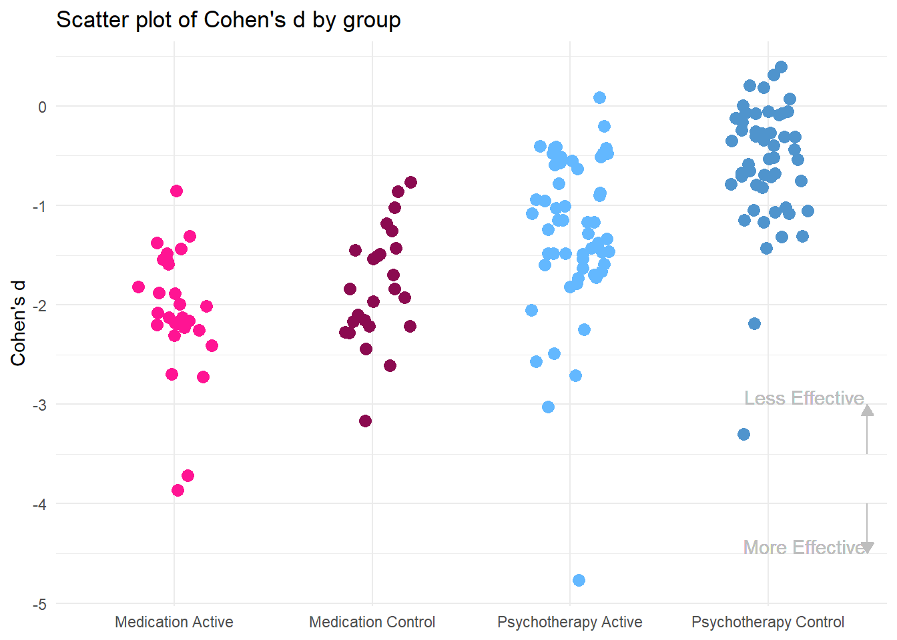
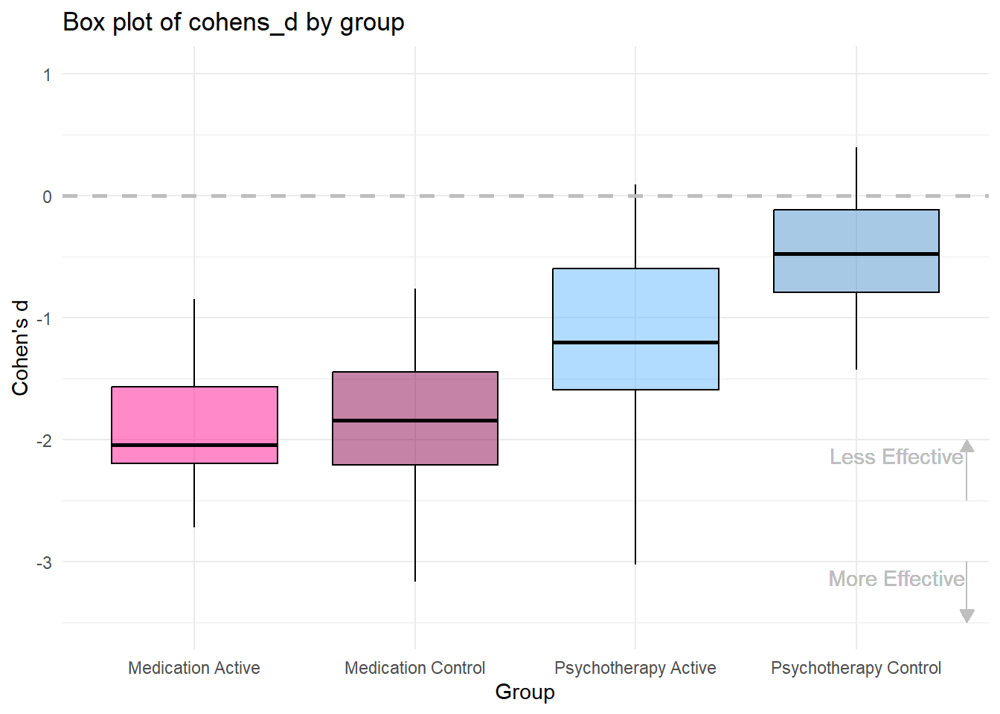
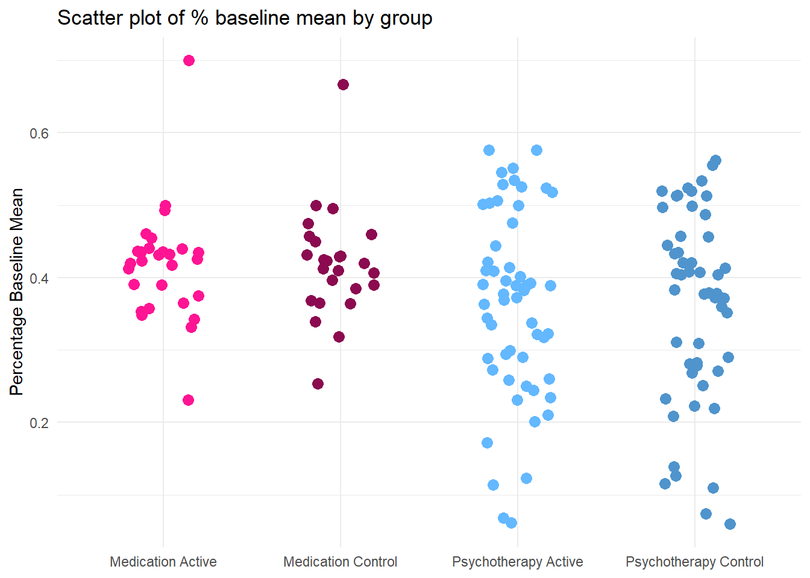

critical value of z = 1.645 corresponding to an alpha = 0.05. Fundamental Problems with the Evidence Base of Adolescent Depression Treatments
Introduction
There are two principal treatment modalities for adolescent depression: psychotherapy, medication, or both. Where does one turn to find the evidence that will inform their treatment options? This question is relevant for patients and their carers, for clinicians and for policy makers when they plan services. However, the question is particularly difficult to answer for adolescent depression, where there are limited data from head-to-head trials of medication and psychotherapy, and where recommendations must therefore be derived from indirect comparisons of treatment efficacy.
Guidelines, such as the ones that the internationally influential UK National Institute of Clinical Excellence (NICE) have produced for adolescent depression, are a principal source of such information. NICE recommend that youth be first offered psychological therapy (specifically cognitive behaviour therapy and interpersonal therapy) over medication for most presentations of depression. This conclusion is in keeping with two sources of evidence. On the one hand, medication meta-analyses that cast doubt on the efficacy of most antidepressants, with the exception of fluoxetine (ref); and on the other hand, psychotherapy meta-analyses that conclude psychotherapy to be effective for adolescent depression (ref). However, such conclusions seem at odds with those of a recent network meta-analysis (ref), an established method of comparing treatments with each other using both direct (head-to-head) and indirect (indirectly treatment A with treatment C, via studies that directly compare treatments A with B and B with C) evidence. Indeed, the network meta-analysis concluded that only fluoxetine alone and fluoxetine administered together with CBT were significantly more effective than pill placebo or psychological controls. Given this confusing evidence base, how should patients, carers, clinicians and policy makers make decisions on treatment options for adolescent depression?
In this paper, we examine whether the existing evidence base for adolescent depression treatment can offer valid answers to such questions. Below, we provide a conceptual framework for answering such questions and state our hypotheses that we will test using data from existing trials. Two points are relevant to indirect comparisons of treatment modalities with each other.
First, whether the participants of trials in one modality are comparable to those in another modality. Second, whether key conditions of the trial, such as the effects of control conditions or the number of sites involved in a trial, are comparable.
Starting with the first point, to be able to compare between different trials one must assume that these trials sample from the same population. If they do not, then the validity of any comparisons, including those conducted through network metanalysis (which rests on the principal of transitivity) are questionable.
Indeed, comparing outcomes (Y) between psychotherapy and medication trials requires us to contrast what is called the sample average treatment effect \(\tau\) of each, defined in the following way:
\[ \tau_{psy} = E(Y_{1} - Y_{0} \,|\, S, psy) \] \[ \tau_{med} = E(Y_{1} - Y_{0} \,|\, S, med)\ \]
where the operator E denotes the expectation over the differences in outcomes between those who received the intervention (T = 1) and those who received the control condition (T = 0), for each sample, \(S\), where psy and med stand for psychotherapy and medication respectively.
Obviously, this comparison rests on the assumption that trials in both modalities sample from the same population, \(P\), of patients. Formally, this can be expressed as follows:
\[E(Y_{1} \,|\, \text{S, psy}) = E(Y_{1} \,|\, P, \text{psy})\]
\[E(Y_{1} \,|\, \text{S, med}) = E(Y_{1} \,|\, P, \text{med})\]
signifying that the effect found in the population would be expected to be found in the same population for each treatment.
This assumption may be hard to meet. Clinical experience and empirical evidence (ref: (https://www.ncbi.nlm.nih.gov/pmc/articles/PMC4156137/, https://www.ncbi.nlm.nih.gov/pmc/articles/PMC7669695/#:~:text=Adolescents%20also%20may%20be%20more,medications%2C%20and%20fewer%20anxiety%20symptoms. , https://pubmed.ncbi.nlm.nih.gov/16502131/) indicate that patients and parents often have preferences between psychotherapy and medication, meaning that there is likely to be a self- %>% ion bias with respect to who participates in psychotherapy versus medication trials. Moreover, these treatment preferences correlate with clinically-relevant characteristics of the participants, including severity, gender and comorbidity. Some of these characteristics, particularly baseline severity, may moderate treatment response (ref) and therefore, if they differ across psychotherapy and medication trials, they may confound comparisons.
Here we will compare between four key sample characteristics, namely baseline severity in the outcome, number of sites, gender and age in each sample.
In terms of the second point, differences in trial design may impact outcomes in a differential way between antidepressant and psychotherapy trials. Perhaps the most obvious way in which this happens is the fact that participants in psychotherapy trials are unblinded in terms of treatment allocation; by contrast, in new antidepressant trials, patients (and raters) were found to be unlikely to be able to judge treatment allocation (cite: Assessment of blinding in randomized controlled trials of antidepressants for depressive disorders 2000−2020: A systematic review and meta-analysis, Lancet). This creates differential expectations between medication and psychotherapy trials. Importantly, the placebo control has been developed in order to match as closely as possible the intervention condition, so as to minimise differences in expectancy between conditions. By contrast, psychotherapy control arms vary across waitlist controls, treatment as usual and active controls. These differences in expectation essentially favour the psychotherapy active condition and disadvantage the psychotherapy control (thus potentially the difference between them), because participants in the active condition could be content for receiving the “cutting edge treatment” whilst those in the control will be dissatisfied for having missed out on “proper treatment”. And this is important because expectancy is associated with treatment outcomes. This also poses problems when trying to infer indirect comparisons in network metanalyses where, for example, CBT is compared to placebo control and medication — given the likely differential expectation effects, comparisons to the unblinded psychotherapy controls may be biased.
Another difference in design that has potential implications for which patients are selected into the trial is the number of sites in a trial. Previous research has shown that in medication trials the number of sites is positively related to the magnitude of the placebo response. This phenomenon is hard to explain fully with the data available, but may be due to lower quality of phenotyping in such studies, with higher measurement (and therefore diagnostic classification) errors, leading to issues such as spontaneous remission or regression to the mean. In contrast to medication trials, psychotherapy trials typically involve one or fewer sites.
An inter-related issue concerns the nature of control interventions being used. Control conditions in trials are meant to generate counterfactual conditions (CITE RUBIN et al) to the intervention: what would have been the outcome in an individual had they not received the intervention. This implies that there is a latent distribution of values that represent that counterfactual condition which control arms in trials are meant to approximate. Those latent values of the counterfactual condition should, on average, not be different between psychotherapy and medication trials, provided that the samples are representative of the same underlying population (see Eqs 1& 2). If the average response to placebo and psychotherapy controls differs systematically from each other, then this is either due to the fact that the trials sample from different populations or because the control conditions differ in their effects (e.g. because of how much they do or do not protect against expectancy effects).
Understanding the nature of controls for each treatment modality is important for a similar reason. Often, in the public domain, psychotherapy and medication are compared to each other on the basis of their respective effect sizes. However, as evident from Eqs 1 and 2, these effect sizes represent differences between the active intervention and the control condition (placebo or psychotherapy control). For these effect sizes to be comparable, placebo and psychotherapy controls ought to be the equal. Otherwise, misleading conclusions could be drawn, e.g. two effect sizes of 40% would be considered equal, even if one arose from a difference of 100% - 60% and another arose from a difference of 40% - 0%.
In this paper, we examine psychotherapy and medication trials in the following ways. First, we compare key baseline characteristics of medication vs psychotherapy trials, specifically the extent to which they are comparable in a) baseline severity; b) number of sites involved; c) gender composition and d) age. Second, we assess the mean efficacy of psychotherapy controls vs placebo. We recognise that both these sets of analyses pull data out of the randomised comparisons between treatment arms. However, we believe that this is justified for two reasons: a) because it is important to make transparent to all, particularly decision makers in healthcare, the raw data before these are entered into more complex modelling such as network metanalysis, as this allows them to form opinions about the quality and limitations of the input data; b) our aim here is not to make claims about the relative efficacy of each treatment arm, but rather establish whether the conditions for the possibility of comparisons are fulfilled. Thus, the comparisons between control conditions are not meant to lead to inferences about placebo being “more efficacious” than psychotherapy controls, but rather to make transparent the problem that they seem to derive from different distributions. Third, we examine the quality of psychotherapy controls as such, by scrutinising the extent to which they are matched to the active intervention in ways such as number or frequency of sessions, and therefore, whether they represent fair pairings from which to draw valid efficacy inferences.
@stringarisDevelopmentalPathwaysChildhood2014
Method
Studies included
For this review, we primarily drew upon studies included in two recent meta-analyses. Please refer to these original meta-analyses for a detailed description of study selection criteria. Psychotherapy studies were drawn from Cuijpers’ (2023) systematic review and meta-analysis of randomised trials comparing psychotherapy for youth depression against control conditions. Cuijpers made available a full dataset of psychotherapy trials (via https://www.metapsy.org/), which we used for the current study. Whilst Cuijpers (2023) excluded those studies for which the primary outcome variable could not be calculated due to missing data, we included these studies and performed the imputations outlined below; hence we have more psychotherapy studies included in this review compared to Cuijpers’ (2023) meta-analysis. Whilst the online database is regularly updated, we chose to exclude studies published after the final date of Cuipers’ (2023) literature search.
Medication studies were drawn from Cipriani’s (2016) network meta-analysis examining the efficacy and tolerability of a range of antidepressants and placebo for major depressive disorder in young people. The study dataset was made available online though did not include means or standard deviations at baseline or post-test. We emailed the study authors requesting a full dataset with this data, though did not receive a reply, and hence conducted data extraction for medication studies. We excluded three studies because they did not include a control arm. We were unable to locate and therefore complete extraction for two papers. Many studies did not report complete data, and so we emailed all corresponding authors to request missing data, though did not receive any responses. We conducted a systematic search for medication studies published after the final search date of Cipriani’s (2016) review up to the final search date of Cuijpers’ (2023) review to ensure we analysed an equivalently up-to-date database of medication trials. We used the same search terms outlined in Cipriani (2016).
Statistical Analysis
Trial and sample characteristics
We conducted a series of random effects meta-analyses and tested for subgroup differences between psychotherapy versus medication trials in sample characteristics including gender, age, and severity of depressive symptoms at baseline. Meta-analyses were implemented using R’s meta package.
In order to compare depression severity across different instruments, we performed a min-max normalisation to turn each study arm mean score at baseline into a percentage using the following formalism:
\[ \text{outcome}_{percent} = \frac{\bar{X} - \text{scale}_{min}}{\text{scale}_{max} - \text{scale}_{min}} \]
where, \[\bar{X}\] is the mean score for each study arm on the primary outcome questionnaire, and \({scale}_{min}\) and \({scale}_{max}\) are the minimum and maximum possible values of the scale in question, respectively. The standard deviation is calculated thus:
\[ \text{SD}_{Xpercent} = \frac{\text{SD}_{X}}{\text{scale}_{max} - \text{scale}_{min}} \]
where \(\text{SD}_{X}\) is the original standard deviation of the mean at baseline.
We also conducted a t-test to compare mean number of trial sites between psychotherapy and medication trials.
Measures of Effect
As the measure of effect of each individual study, we used the within-group Standardised Mean Difference (SMD), which we defined following NOTE: Charlotte cite Lakens 2013 and in there Cummings 2012, as:
\[SMD_{change} = \frac{Mean_{t_{2}} - Mean_{t_{1}}}{\frac{SD_{t{2}} + SD_{t{1}}}2}\ \]
where, \(Mean_{t_{2}}\) and \(Mean_{t_{1}}\) refer to the means of the main outcome score at the end and beginning of the intervention respectively and \(SD_{t_{2}}\) and \(SD_{t_{1}}\) to the respective standard deviations. Where individual studies did not report all data required to calculate the SMD, we imputed missing data according to the methods summarised by X (citation), in the following order. If a study reported the standard error of the mean, the SD was obtained simply by multiplying the SE by the square root of the sample size. For conditions where the SD was missing at one time point, the baseline SD was substituted by the post-test SD, and vice versa. If the SD was not available at either time point, missing values were replaced by the mean of the SDs available for comparable cases (defined as same trial type (psy or med), same instrument, same timepoint (pre or post), and same arm (control or active)). Where there were missing means at either baseline or post-test, missing values were calculated using mean change scores, preferring the change scores reported in the paper itself, though where this was unavailable, using the change scores reported in the dataset from Cipriani’s meta-analysis (citation).
For the purposes of metanalysis, it is necessary to estimate a standard error of the SMD. This is calculated according to:
\[ SE_{SMD} = \sqrt{\frac{2(1 -r_{t_{1}t_{2}})}{n} + \frac{SMD^2}{2n}}\]
where \(n\) refers to the study sample size and \(r_{t_{1}t_{2}}\) refers to the correlation between the outcome score obtained at baseline and at the end point. This correlation is typically not reported in studies and is often imputed using previously reported correlations for the instruments used. However, this practice has given rise to concerns about misestimation. Whilst such misestimation is possible, there is no reason to expect that it would be systematic, i.e. bias estimation of the effects for the control group of medication compared to those of psychotherapy. Still, to alleviate such concerns we have used a simulations.
In particular, we simulated one thousand truncated distribution of standard errors with the following general characteristics:
\[r_{t_{1}t_{2}} \sim \mathcal{TN}(\mu, \sigma, a, b)\]
for which we chose the mean to be \(\mu = 0.65\), the standard deviation to be \(\ sigma = 0.2\), and the upper and lower bounds to be \(a = 0.45\) and \(b = 0.9\), respectively. We then used these simulated datasets in the subsequent metanalyses.
Random Effects Metaregression
We estimated the pooled standardised mean difference for each arm by using a random effects metanalysis implemented in R’s metafor package. The main underlying assumption of random effects metanalysis is that each study’s true effect size \(\theta_{k}\) is affected not only by sampling error \(\epsilon_{k}\), but also by \(\zeta\) which represents heterogeneity between studies, allowing each study’s estimate to vary along a distribution of effects, and the distribution of true effect sizes termed \(\tau^2\). Therefore, we can estimate a two stage model with:
\[Y_i \sim \mathcal{N}(\theta_i, \sigma_i^2) \]
\[\theta_i \sim \mathcal{N}(x_i\beta, \tau_i^2) \]
where \(Y_i\) is the estimated effect size for study i, has a normal distribution with \(\theta_i\) as its true mean effect and sampling error \(\sigma^2\). Whereas \(\theta_i\) is a study-specific instantiation of the distribution of effect sizes, with \(\tau^2\) representing heterogeneity.
This then gives rise to:
\[Y_i = x_i\beta_i + u_i + \epsilon_i\]
where,
\[u_i \sim N(0, \tau^2) \]
describes the deviation of each study from the mean of the distribution, and,
\[\epsilon_i \sim N(0, \sigma^2)\]
describes the sampling error.
We can then specify the following model to obtain the means of each arm of the trials as follows:
\[ \begin{aligned} Υ_i &= \begin{cases} 0 & MedControl: b_0 + u_i + \epsilon_i\\ 1 & MedActive: b_0 + b_{1_{i}} + u_i + \epsilon_i \\ 2 & PsyActive: b_0 + b_{2_{i}} + u_i + \epsilon_i \\ 3 & PsyControl: b_0 + b_{3_{i}} + u_i + \epsilon_i \\ \end{cases} \end{aligned}\]
where to obtain the mean of each level is the sum of \(b_0\), the intercept for the reference category of medication control, with the coefficient of each level, e.g. for level 3, \(b_{3_{i}}\) the psychotherapy controls. The confidence intervals of the means are constructed in the standard way using the standard errors of the mean. Similarly, each coefficient represents the contrast between the reference category and each level, for an example and of main interest to us \(b_{3_{i}}\) represents the contrast between psychotherapy and medication control arms. Inference on the contrasts is done as follows:
\[ z = \frac{\hat{\beta}}{\text{SE}(\hat{\beta})} \]
We used maximum likelihood (ML) to estimate model and applied Hartung-Knapp adjustment to reduce the chance of false positives (NOTE: Charlottecite Ioannides on this).
We present our main results as means of the estimates across simulated datasets, for example, the SMDs of each level of the dummy variable above are means across the simulations.
Sensitivity Analyses
We conducted a number of additional analyses to test for the robustness of our results.
First, for each of the the analyses comparing trial and sample characteristics at baseline, and control efficacy between study arms, we performed sensitivity analyses where we restricted the included studies in the following ways. First, we excluded studies which recruited participants with subclinical levels of depression. Second, we restricted the analyses to studies using CBT and the FDA-approved antidepressants fluoxetine and escitalopram. Third, we excluded studies that used waitlist as their control condition.
Further, we tested whether the simulated values for the standard error had a substantial influence on the estimation of the differences between the medication vs psychotherapy control condition. To inspect whether this is the case, we plotted the z-value of the difference between the two coefficients against the number of simulations. We make inference on the stability of the difference, by counting the proportion of times that the z-value is above the
Comparing the control versus active arms of psychotherapy trials
We ran t-tests to compare the active versus control arms of psychotherapy trials on key variables of interest regarding the nature and intensity of the interventions. We extracted data pertaining to the number, duration and intensity of sessions, and the total cumulative hours and period of the intervention. Where a range was provided, the maximum was encoded (e.g. if a paper reported that an intervention involved 8-10 sessions lasting 50-60 minutes, we encoded the number and duration of sessions as 10 and 60, respectively). If sessions varied in frequency across an intervention, we calculated an average by dividing total number of sessions by length of intervention period. Similarly, if the length of sessions varied across the course of the intervention, we calculated a weighted average. Phone call, web-chat and online sessions were encoded as sessions, however guided self-help components were not.
Results
Included studies
The data for the studies included in this metanalysis are summarised in Supplementary Table 1 and are also available as a csv dataframe on [https://github.com/transatlantic-comppsych/apples_oranges].
In total, there were 81 studies which included 28 active arms and 25 control arms of antidepressant trials; and 55 active arms and 52 control arms from psychotherapy trials. Note that the number of active and control arms does not exactly match because some studies feature more than one control or active arm. There were also missing data for 4, 4, 6, and 6 trial arms for medication active, medication control, psychotherapy active, and psychotherapy control conditions respectively, as the data needed to calculate the SMD was missing and could not be imputed by any of the methods outlined above.
Placebo was the control condition for all medication trials; the active arm ranged from serotonin reuptake inhibitors, such as 6 fluoxetine and 2 escitalopram, to tricylics, such as 2 nortriptyline. In psychological trials, the control arm included 14 WL controls, 25 care as usual and several other conditions such as 4 attention control conditions; the active arm included 43 CBT and 8 IPT amongst others. All included trials and the types of treatment controls can be found in Supplementary Table 1.
Sample characteristics at baseline in medication versus psychotherapy trials
Table 1 summarises the results from each of the meta-analyses examining sample characteristics at baseline. The summary statistics are provided for each subgroup (i.e. for medication and psychotherapy trials) and the p-value derives from the test for subgroup differences. Full results for each of the sensitivity analyses are included in the Supplementary Materials (Table X - Y).
Baseline severity
On average, severity of depressive symptoms at baseline was significantly higher in medication trials when compared to psychotherapy trials. The statistics provided in Table 1 are baseline depression scores transformed to reflect percentage of a scale range. To take an example, the CDRS gives a possible total score from 17 to 113 (i.e. range of 96). From Table 1, mean severity was 0.36 for psychotherapy studies and 0.42 for medication studies, which would translate to 51.56 (17 + 0.36 x 96) and 57.32 (17 + 0.42 x 96), respectively, as equivalent scores on the CDRS.
When taking only those studies where the active arm was either CBT, fluoxetine or escitalopram, there was a significant difference between psychotherapy and medication studies. This difference did not reach statistical significance when excluding psychotherapy studies that recruited samples with sub-clinical depression or when excluding studies that used wait list as their control. Please refer to Table S1 for these results.
Gender
As can be seen in Table 1, psychotherapy trials featured a significantly higher percentage of women when compared to medication trials. On average, samples were comprised of 60.9% (SE = 2.4) women across psychotherapy trials and 51.5% (SE = 2.9) women across medication trials. Excluding sub-clinical and waitlist control studies yielded very similar results. This difference in gender composition however did not reach statistical significance when only CBT, fluoxetine and escitalopram trials were included (see Table S2).
Age
As can be seen in Table 1, mean age was 14.24 (SE = 0.34) across psychotherapy trials and 13.6 (SE = 0.47) across medication trials, with no significant between group differences. There were no significant differences in mean age between modalities on further sensitivity analyses (see Table S3).
| Subgroup | K | Mean | SE | Lower CI | Upper CI | T2 | p-value1 |
|---|---|---|---|---|---|---|---|
| Severity | 0.023 | ||||||
| Psychotherapy | 47 | 0.36 | 0.02 | 0.32 | 0.4 | 0.02 | |
| Medication | 24 | 0.42 | 0.02 | 0.38 | 0.45 | 0.01 | |
| Percent Women | 0.013 | ||||||
| Psychotherapy | 46 | 60.9 | 2.38 | 56.11 | 65.69 | 260.19 | |
| Medication | 21 | 51.5 | 2.92 | 45.4 | 57.6 | 179.41 | |
| Age | 0.271 | ||||||
| Psychotherapy | 51 | 14.24 | 0.34 | 13.56 | 14.92 | 5.85 | |
| Medication | 21 | 13.6 | 0.47 | 12.61 | 14.58 | 4.68 | |
| 1 Statistic derived from the test for subgroup differences in the relevant meta-analysis |
Number of trial sites
There was a significant difference between the number of sites in medication versus psychotherapy trials, as can be seen in Tables 2 and 3. Average number of trial sites was significantly higher across medication studies ( M = 29.76, SD =18.52) compared to psychotherapy studies ( M =3.07, SD =3.16)(t (20.54) = 6.56, p =1.8898978^{-6}).
| statistic | df | p_value | ci_lower | ci_upper | |
|---|---|---|---|---|---|
| t | 6.56 | 20.54 | < 0.001 | 18.22 | 35.17 |
Mean efficacy of psychotherapy versus medication control conditions
We applied metaregression to obtain the SMDs and confidence intervals of each of the four arms.
As can be seen in Figure 1, there were substantial differences between the four arms of the metanalysis with striking differences between the medication and the psychotherapy control arms. In particular, placebo had an SMD = -1.8 (95% CI: -2.03 to -1.56) whereas psychotherapy controls had an SMD = -0.51 (95% CI: -0.79 to -0.22 ) (see Table 4 below).
| Condition | N | Coefficient | SE | Lower CI | Upper CI |
|---|---|---|---|---|---|
| Medication Control | 28 | -1.80 | 0.12 | -2.03 | -1.56 |
| Medication Active | 25 | -2.02 | 0.16 | -2.34 | -1.70 |
| Psychotherapy Control | 55 | -0.51 | 0.14 | -0.79 | -0.22 |
| Psychotherapy Active | 52 | -1.16 | 0.15 | -1.44 | -0.87 |
In Table 5, we present the regression that tests our hypothesis about differences between medication and psychotherapy controls. In particular, in this metaregression model, medication control is the reference category (termed intercept) to which all other categories of the dummy variable are compared. The strongest difference between arms, as judged by the z-value, is between the psychotherapy and medication controls with a z-value , which yields a very low p-value ( 0.000e+00 ).
| Condition | Coefficient | SE | z value | Lower CI | Upper CI | T2 | I2 | k | R2 |
|---|---|---|---|---|---|---|---|---|---|
| Medication Control | -1.80 | 0.12 | -15.11 | -2.03 | -1.56 | 0.26 | 93.1 | 160 | 58.2 |
| Medication Active | -0.22 | 0.16 | -1.35 | -0.55 | 0.10 | 0.26 | 93.1 | 160 | 58.2 |
| Psychotherapy Control | 1.29 | 0.14 | 8.95 | 1.01 | 1.58 | 0.26 | 93.1 | 160 | 58.2 |
| Psychotherapy Active | 0.64 | 0.15 | 4.42 | 0.35 | 0.93 | 0.26 | 93.1 | 160 | 58.2 |
Sensitivity analyses
We then conducted a series of sensitivity analyses of our results. We compared the control and active arms of CBT studies to those of fluoxetine and escitalopram studies. As can be seen, the pattern of results is very similar to that of the overall analyses.
png
2 We next analysed the data after excluding waitlist control studies. As can be seen, the pattern of results is very similar to that of the overall analyses.
png
2 We next analysed the data after excluding sub-clinical studies. Again, the pattern of results was very similar to that of the overall analyses.
png
2 Effect of standard errors of the SMDs .
png
2 It could be argued that the choice of standard errors of the changes for the calculation of the confidence intervals could have affect the results in one or the other direction. To address such concerns we have simulated 1000 different datasets with SMDs coming from a broad distribution. If standard error distributions were influential, this should show up as substantial variability across simulations. We test this idea in the Figure X which displays across the 1000 simulations the z-value of the contrast between medication and psychotherapy control arms (the mean of which we presented in Table X). As can be seen, the variability in the z-score is minimal and consistently far away from the threshold for significance, i.e. the value of z = 1.645.
Comparing the nature and intensity of control conditions in psychotherapy trials
| Group | N | Mean | SD |
|---|---|---|---|
| Number of sessions | |||
| Active | 62 | 13.53 | 11.26 |
| Control | 37 | 6.08 | 6.15 |
| Frequency (weeks) | |||
| Active | 56 | 1.36 | 0.69 |
| Control | 33 | 0.63 | 0.68 |
| Session length (mins) | |||
| Active | 53 | 69.56 | 28.87 |
| Control | 33 | 31.32 | 35.13 |
| Total intervention hours | |||
| Active | 53 | 14.60 | 9.85 |
| Control | 33 | 5.45 | 7.85 |
| Total intervention period (weeks) | |||
| Active | 61 | 11.21 | 7.00 |
| Control | 32 | 9.75 | 8.03 |
| Outcome | t statistic | df | p-value | Lower CI | Upper CI | |
|---|---|---|---|---|---|---|
| t | Number of sessions | 4.26 | 96.41 | < 0.001 | 3.98 | 10.93 |
| t1 | Frequency (weeks) | 4.83 | 67.64 | < 0.001 | 0.43 | 1.02 |
| t2 | Session length (mins) | 5.25 | 58.23 | < 0.001 | 23.65 | 52.83 |
| t3 | Total intervention hours | 4.76 | 78.88 | < 0.001 | 5.32 | 12.98 |
| t4 | Total intervention period (weeks) | 0.87 | 56.05 | 0.387 | -1.90 | 4.83 |
Overall, the active arms of psychotherapy studies were considerably more intensive than the control arms they were compared against (see Table 6 for summary statistics). Active intervention arms featured significantly more sessions than control arms (t (96.41) = 4.26, p = < 0.001). These sessions were also significantly longer (t (58.23) = 5.25, p = < 0.001) and more frequent (t (67.64) = 4.83, p = < 0.001). The total hours involved in an intervention were higher in active vs control arms (t (78.88) = 4.76, p = < 0.001), though the total period of the intervention was similar (t (56.05) = 0.87, p = 0.387).
#######END HERE########
Write up results for sensitivity analyses
Addressing Regression to the Mean
Argyris are we happy to remove this whole section?
We first conducted a meta-analysis to test for differences in means at baseline in the two instruments, CDRS-R and HAM-D on which there was a sufficient number of studies to metanalyse.
As can be seen in Table 3a and 3b, there baseline scores in medication studies were on average substantially higher for the CDRS (10.9 points for the control arms) and the HAM-D (7.3 points for the control arms), respectively. As can be seen in Supplementary Tables XX the differences were significant at p<0.05 for CDRS, thought they did not reach statistical significance for the HAM-D (p = 0.0573).
As can be seen in Table 4, the baseline mean has a very strong association with the SMD.
Table 5 shows the adjusted SMDs with their confidence intervals that we estimated in metaregression. As can be inferred from the non-overlapping confidence intervals, the difference between the two control conditions was significant (details of the regression model can be found in Supplementary Table XX ). Differences were significant between active medication and psychotherapy control, but not between any of the other groups.
Finally, we tested whether the simulated correlation values we used for simulation of the standard errors had an appreciable effect on the values of the adjusted SMDs. Supplemental Figure X shows that the variability of the estimated z-value was minimal.
Tables 6a and 6b show the baeline-mean adjusted SMDs for the CDRS at outcome when the baseline measurement has been taken into account.
# knitr:: kable(cdrs_smd_with_cis, caption = "Table 6a. CDRS baseline mean adjsuted SMDs")Supplement
df_severity_sens %>%
kbl(align = "l", caption = "Table S1: Sensitivity analyses for comparison of baseline severity levels between psychotherapy and medication trials", escape = F) %>%
kable_material(lightable_options = c("hover"), full_width = FALSE) %>%
row_spec(row = 0, background = "#EBEBEB", extra_css = "border-bottom: 1px black;" ) %>%
row_spec(row = 1, bold = T) %>%
row_spec(c(4, 7), bold = T, extra_css = "border-top: 1px solid black;") %>%
column_spec(1, border_right = T) %>%
add_indent(c(2, 3, 5, 6, 8, 9)) %>%
footnote(number = c("Statistic derived from the test for subgroup differences in the relevant meta-analysis"))| K | Mean | SE | Lower CI | Upper CI | T2 | p-value1 | |
|---|---|---|---|---|---|---|---|
| CBT, fluoxetine and escitalopram | NA | NA | NA | NA | NA | NA | 0.004 |
| Psychotherapy | 36 | 0.35 | 0.02 | 0.30 | 0.40 | 0.02 | NA |
| Medication | 7 | 0.42 | 0.01 | 0.40 | 0.43 | 0.00 | NA |
| Excluding subclinical | NA | NA | NA | NA | NA | NA | 0.189 |
| Psychotherapy | 39 | 0.38 | 0.02 | 0.35 | 0.42 | 0.01 | NA |
| Medication | 24 | 0.42 | 0.02 | 0.38 | 0.45 | 0.01 | NA |
| Excluding waitlist | NA | NA | NA | NA | NA | NA | 0.046 |
| Psychotherapy | 39 | 0.36 | 0.02 | 0.32 | 0.41 | 0.02 | NA |
| Medication | 24 | 0.42 | 0.02 | 0.38 | 0.45 | 0.01 | NA |
| 1 Statistic derived from the test for subgroup differences in the relevant meta-analysis |
df_gender_sens %>%
kbl(align = "l", caption = "Table S2: Sensitivity analyses for comparison of gender composition between psychotherapy and medication trials", escape = F) %>%
kable_material(lightable_options = c("hover"), full_width = FALSE) %>%
row_spec(row = 0, background = "#EBEBEB", extra_css = "border-bottom: 1px black;" ) %>%
row_spec(row = 1, bold = T) %>%
row_spec(c(4, 7), bold = T, extra_css = "border-top: 1px solid black;") %>%
column_spec(1, border_right = T) %>%
add_indent(c(2, 3, 5, 6, 8, 9)) %>%
footnote(number = c("Statistic derived from the test for subgroup differences in the relevant meta-analysis"))| K | Mean | SE | Lower CI | Upper CI | T2 | p-value1 | |
|---|---|---|---|---|---|---|---|
| CBT, fluoxetine and escitalopram | NA | NA | NA | NA | NA | NA | 0.050 |
| Psychotherapy | 34 | 59.07 | 2.76 | 53.46 | 64.68 | 258.53 | NA |
| Medication | 7 | 46.84 | 5.61 | 33.11 | 60.56 | 220.11 | NA |
| Excluding subclinical | NA | NA | NA | NA | NA | NA | 0.015 |
| Psychotherapy | 39 | 61.21 | 2.73 | 55.67 | 66.74 | 291.49 | NA |
| Medication | 21 | 51.50 | 2.92 | 45.40 | 57.60 | 179.41 | NA |
| Excluding waitlist | NA | NA | NA | NA | NA | NA | 0.019 |
| Psychotherapy | 38 | 60.83 | 2.70 | 55.35 | 66.31 | 277.94 | NA |
| Medication | 21 | 51.50 | 2.92 | 45.40 | 57.60 | 179.41 | NA |
| 1 Statistic derived from the test for subgroup differences in the relevant meta-analysis |
df_age_sens %>%
kbl(align = "l", caption = "Table S3: Sensitivity analyses for comparison of age between psychotherapy and medication trials", escape = F) %>%
kable_material(lightable_options = c("hover"), full_width = FALSE) %>%
row_spec(row = 0, background = "#EBEBEB", extra_css = "border-bottom: 1px black;" ) %>%
row_spec(row = 1, bold = T) %>%
row_spec(c(4, 7), bold = T, extra_css = "border-top: 1px solid black;") %>%
column_spec(1, border_right = T) %>%
add_indent(c(2, 3, 5, 6, 8, 9)) %>%
footnote(number = c("Statistic derived from the test for subgroup differences in the relevant meta-analysis"))| K | Mean | SE | Lower CI | Upper CI | T2 | p-value1 | |
|---|---|---|---|---|---|---|---|
| CBT, fluoxetine and escitalopram | NA | NA | NA | NA | NA | NA | 0.185 |
| Psychotherapy | 37 | 14.41 | 0.36 | 13.68 | 15.14 | 4.79 | NA |
| Medication | 7 | 13.51 | 0.57 | 12.12 | 14.91 | 2.25 | NA |
| Excluding subclinical | NA | NA | NA | NA | NA | NA | 0.306 |
| Psychotherapy | 42 | 14.22 | 0.38 | 13.44 | 15.00 | 6.17 | NA |
| Medication | 21 | 13.60 | 0.47 | 12.61 | 14.58 | 4.68 | NA |
| Excluding waitlist | NA | NA | NA | NA | NA | NA | 0.306 |
| Psychotherapy | 42 | 14.22 | 0.38 | 13.44 | 15.00 | 6.17 | NA |
| Medication | 21 | 13.60 | 0.47 | 12.61 | 14.58 | 4.68 | NA |
| 1 Statistic derived from the test for subgroup differences in the relevant meta-analysis |


